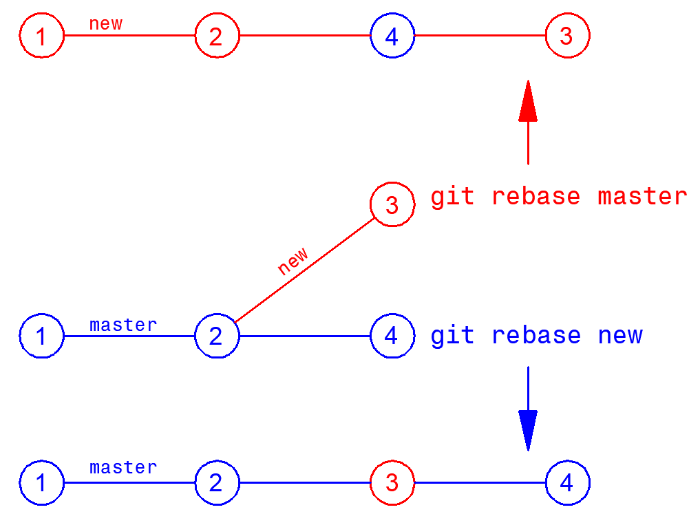

1. Перебазирование ветви:
ˇgit rebase branchˇ - перебазировать ветвь branch, результат зависит от того,
в какой ветви мы находимся:

2. Устранить конфликт слияния в файле (если есть), сохранить изменения.
3. Добавить изменения в индекс:
ˇgit add .ˇ
4. Продолжить перебазирование:
ˇgit rebase --continueˇ - откроется Vim, где можно изменить имя переносимого коммита,
чтобы закрыть Vim - ˇ:wqˇ - enter
5. Выполнить слияние:
ˇgit merge newˇ - слияние будет Fast Forward, без создания коммита
6. Удалить побочную ветку:
ˇgit branch -d newˇ - удалить ветку new
Альтернатива --continue:
ˇgit rebase --abortˇ - отмена перебазирования
Для использования rebase при работе с удаленным репозиторием, нужно сначала скачать
удаленную ветку origin/branch, а затем использовать rebase с одной из локальных веток